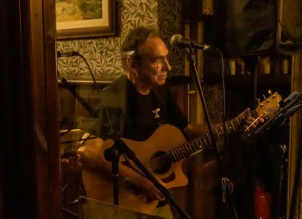
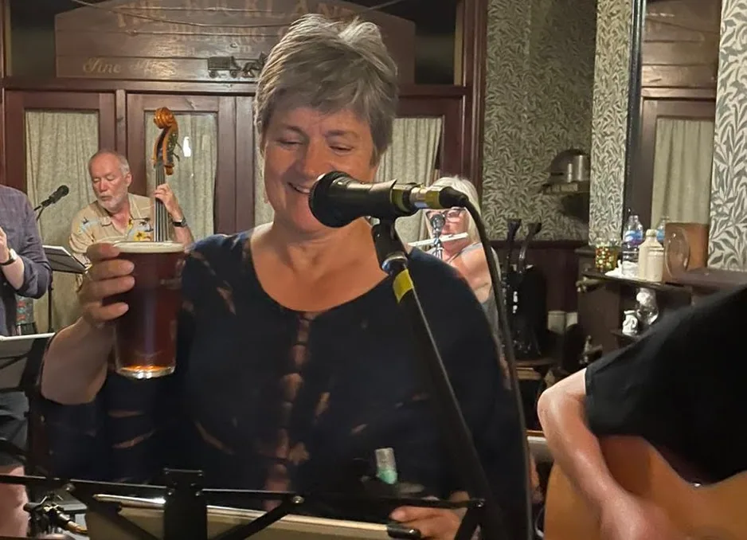
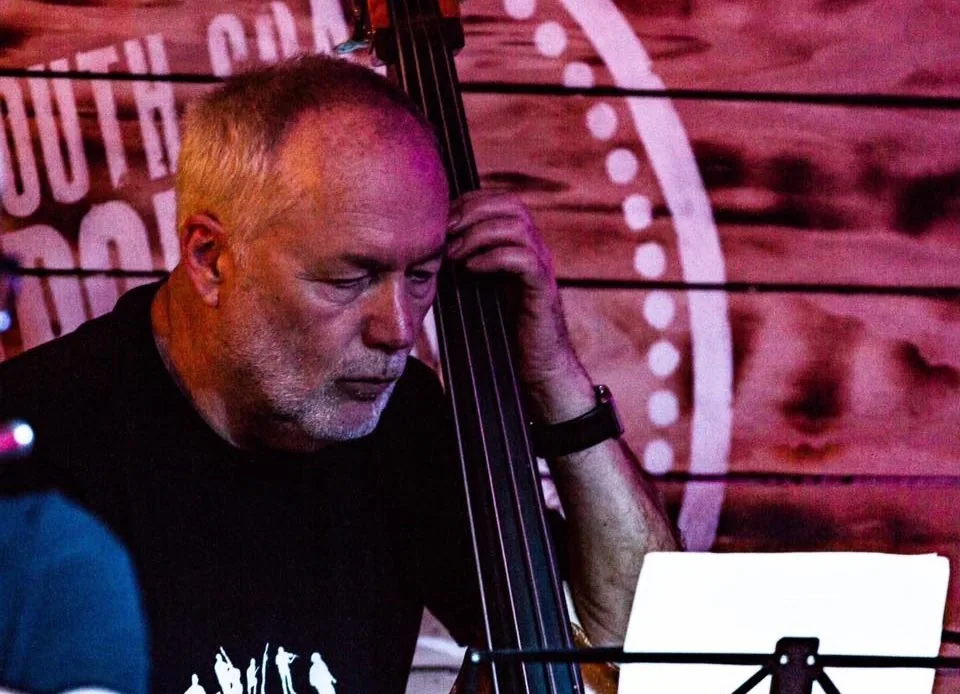
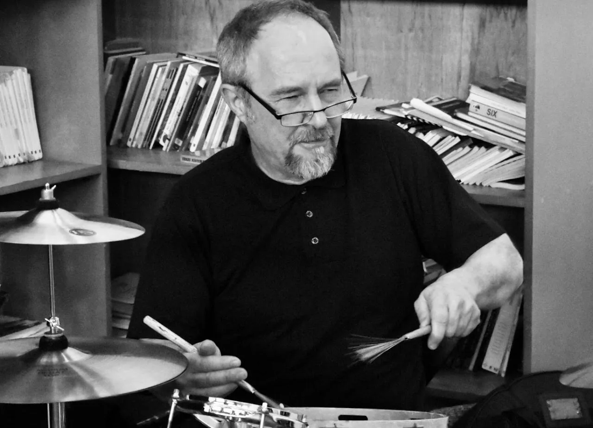
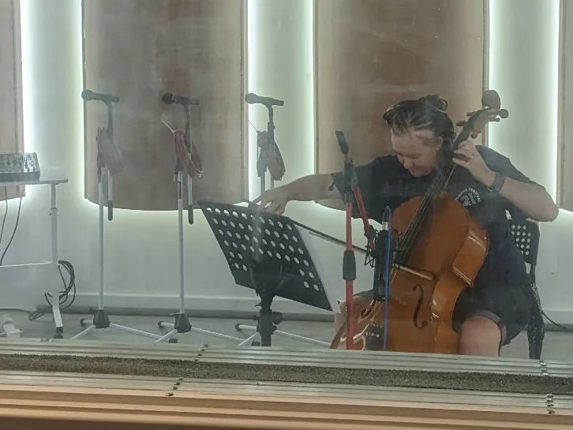
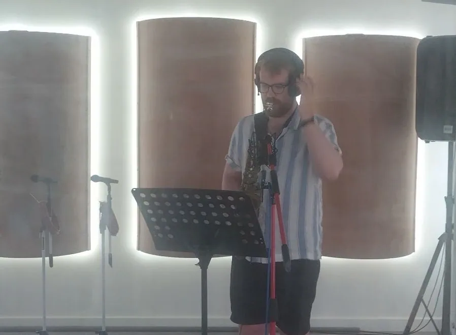
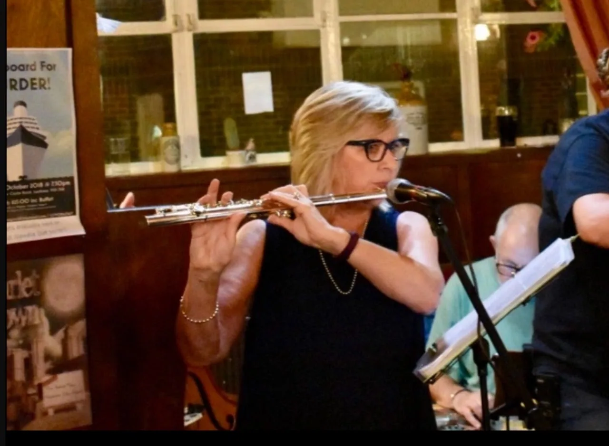

01
Denis Reeve-Baker
Guitar & vocals
Den is the songwriter for the band. He has played in many bands including more recently, Reet Petite and Gone, The Red Sky Divers and Scarlet Town.

ABOUT US.
Harbour Town was formed in 2021 from its sister group Scarlet Town.
These musicians have vast experience gained over decades of playing and recording. The range of instrumentation, as described below, provides the band with the opportunity to generate exciting and varied arrangements to supplement the original song writing. The music reflects a range of British and American influences from the past 60 years, including singer-songwriters and roots music, expressed through a unique combination of instrumentation and vocalists.
The resultant material reflects the talent, diversity and richness that is: Harbour Town.

Guitar & vocals
Den is the songwriter for the band. He has played in many bands including more recently, Reet Petite and Gone, The Red Sky Divers and Scarlet Town.

Vocals (& shaker!)
Jo comes from a musical theatre background. She has performed at the Kings Theatre in Southsea with the Portsmouth Players on many occasions and now brings her wonderful voice to Harbour Town singing lead and harmony vocals with equal warmth, clarity and assurance.

Double bass & backing vocals
Dave is a well-known musician on the scene having played in many bands for many years in the south of England. Previous groups include the Polite Mechanicals as well as Harbour Town’s previous incarnation: the much loved Scarlet Town. Dave instigated and ran the Barebones acoustic music venue and the Mayfly festival events in Portsmouth.

Drums & percussion
Paul Hookham is a great friend of HT having played with Scarlet Town and in bands with Den in the past, inlcluding The Operation which was an eleven piece London busking band. Paul's professional experience included stints with The English Subtitles, The Woodentops and The Redskins.

Clarinet, saxophones, cello, violin, & backing vocals
Scooby is an exceptional, multi talented musician. She has worked with Den in various bands including Ferris Wheel, The Red Sky Divers and Scarlet Town. She leads, and arranges the music for, the wind, brass and strings with a unique understanding and great sensitivity.

Clarinet, saxophones, & flute
Adam is another wonderfully talented musician. He is a music graduate from Royal Holloway and plays several instruments with great confidence and sensitivity. He too played in the previous bands of The Red Sky Divers and Scarlet Town with Scooby and Den.

Flute
Sue first played in a band with Den in 1978! More recently she has been a member of The Red Sky Divers and Scarlet Town and now brings her talent and enthusiasm to the Harbour Town ensemble.